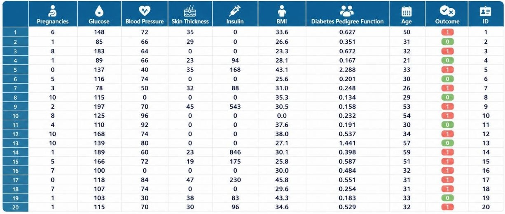
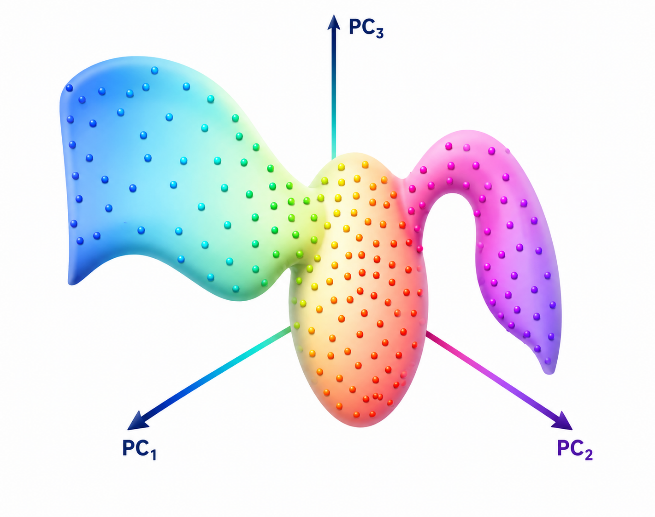
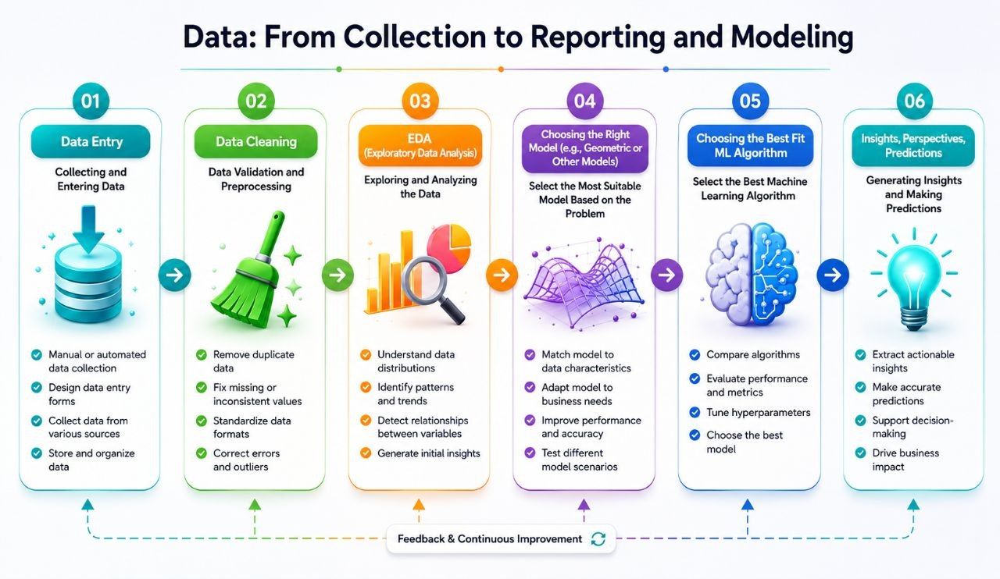

When Topology Tames Data!
An introduction to topological data analysis: from the architecture of data to the discovery of hidden structures — what it means to take the shape of a dataset seriously.
1. Introduction
In many contemporary problems in data science, the central challenge is not merely the scarcity of data, but the complexity of its structure. Biological, medical, financial, behavioral, and industrial datasets typically exhibit characteristics such as high dimensionality, heterogeneity, noise, nonlinear relationships, and the presence of hidden subgroups. In such settings, representing data in tabular form and analyzing them using classical statistical tools or conventional machine learning algorithms — while still indispensable — is not always sufficient for understanding the intrinsic structure of the data. In many applications, what matters is not only the values of variables, but also the overall organization of samples within the data space: which points lie close to one another, what substructures are present in the dataset, whether ring-like or branching patterns can be observed, and whether these structures remain stable under noise.
Topological Data Analysis (TDA) has emerged in response to such questions. The central idea of this approach is to study data as a geometric-topological object — an object whose shape may carry information about the structure, connectedness, and multiscale organization of the data. From this perspective, TDA is not a competitor to machine learning or statistics, but rather a complementary layer in data analysis: a layer that seeks to uncover the stable structure of data either prior to modeling or alongside it.
This review article offers a concise account of the role of TDA within the data analysis pipeline. We begin by showing that the processes of data collection, cleaning, and exploratory analysis may be understood as steps in preparing a geometric representation of data. We then reinterpret data as a collection of points in feature space and, with reference to the manifold hypothesis, discuss the limitations of a purely linear perspective. Next, we examine the role of metrization in transforming data into a space amenable to topological study. Finally, we introduce the idea of multiscale analysis and persistent homology as one of the principal tools of TDA. The article concludes with a brief discussion of a diabetes case study, illustrating how this approach can be applied to the analysis of medical data.
2. From the Data Pipeline to Its Geometric Representation
In practice, data analysis is typically carried out as a multi-stage pipeline: data collection, cleaning and preprocessing, exploratory analysis, the selection of an appropriate representation, and finally modeling or insight extraction. These stages are often presented as a set of technical and independent steps; yet all of them may be understood within the framework of a more fundamental question: how can one construct, from raw data, a representation that preserves its underlying structure as faithfully as possible?
At the data collection stage, the types of variables, the quality of measurement, the data format, and the sampling procedure are determined — decisions that directly affect the eventual structure of the dataset. The cleaning stage is likewise not merely a matter of removing superficial errors, but an effort to transform the data into a comparable analytical substrate. The handling of missing values, the removal of unintended duplicates, the examination of outliers, and the validation of data types all determine whether a meaningful notion of distance and neighborhood can be defined on the data. Put differently, “clean” data, in this context, are data that can be embedded within a coherent analytical space.
Exploratory Data Analysis (EDA) is also more than a collection of plots and descriptive statistics; it constitutes the first step in identifying the structure of the data. At this stage, the analyst encounters clustering patterns, skewed distributions, nonlinear correlations, or the possible presence of latent subgroups. Such clues help determine the appropriate modeling framework for the data: is a Euclidean vector representation sufficient, or does the dataset require a more sophisticated representation?
From this perspective, the data analysis pipeline may be viewed as a process of constructing a suitable geometric representation of data — a representation that subsequently determines the choice of algorithm, metric, dimensionality reduction method, and even the possibility of entering the realm of topological analysis. In this sense, Topological Data Analysis is not a stage entirely separate from data analysis, but rather a natural continuation of the same process: the point at which the question of the shape of data enters the discussion explicitly.
3. Data as a Point Cloud: From Vector Space to the Manifold Hypothesis
In the simplest model, a tabular dataset in the form of a spreadsheet with \(n\) observations and \(p\) features may be regarded as a matrix (Figure 1), each row of which represents a vector in a \(p\)-dimensional space. Under this interpretation, the dataset as a whole becomes a collection of points in feature space — what is commonly referred to in data science as a point cloud. This geometric reinterpretation underlies a wide range of analytical methods: clustering, dimensionality reduction, anomaly detection, and even many machine learning models are built on the assumption that data can be studied as points in a vector space.

Yet this picture is not always sufficient. In many real-world problems, although data may appear to lie in a high-dimensional space, in practice they are organized around a low-dimensional and nonlinear structure. This idea is captured by the manifold hypothesis: real-world data are often concentrated on a low-dimensional substructure within feature space, rather than being distributed throughout the entire surrounding Euclidean space. For example, image, biological, or behavioral data may involve hundreds of features, while their effective degrees of freedom are far fewer. In such cases, a purely linear view of the data may obscure its true underlying structure.
More importantly, in many applications, the raw coordinates of the data are less informative than their neighborhood relations and relative organization. Two datasets may differ substantially in their numerical coordinates, yet display similar behavior in terms of connectedness, multiscale clustering, or the presence of structural paths and loops. It is precisely at this point that the language of topology becomes important: a language concerned not with local numerical values, but with the stable and qualitative structures of data.
Accordingly, viewing data as a point cloud is not merely a geometric metaphor; it serves as a bridge between the tabular representation of data and the analysis of its latent structure. This transition naturally leads to the next fundamental question: if data are regarded as a collection of points, how should proximity and similarity between those points be defined?
4. What Does Topology Add to Data Architecture? From Dissimilarity to Metric Space
A substantial part of data analysis rests on measuring similarity or difference between observations. Clustering, classification, similarity-based retrieval, anomaly detection, and many dimensionality reduction methods all rely, in one way or another, on the question: how close are two observations to one another? In a topological framework, this question is given a more precise formulation: what metric or neighborhood structure should be imposed on the data so that its underlying shape is preserved as faithfully as possible?
The answer begins with the notion of metrization. Here, metrization refers to endowing the data with a distance function or similarity measure capable of transforming raw dissimilarities among observations into a structure amenable to analysis. The importance of this step lies in the fact that many tools in TDA do not begin with the data table itself, but with a metric space derived from the data. Once a notion of distance has been defined on a set of observations, one may construct neighborhoods, connect nearby points, and investigate the topological structure that emerges from these connections.
In simple settings, Euclidean distance may be a natural choice. In many real-world datasets, however, such a choice is insufficient. Differences in feature scales, heterogeneity in variable types, the presence of categorical or temporal data, and even the nonlinear structure of the dataset may all render Euclidean distance an inadequate representation of true proximity between observations. For this reason, the choice of metric should be regarded as part of the conceptual modeling of data, rather than merely a computational decision.
At a richer level, if data are viewed as samples from an underlying smooth structure, one may invoke the idea of a Riemannian manifold and geodesic distances. Under this perspective, the distance between two points is not necessarily the shortest Euclidean path, but rather the shortest path along the structure of the data itself. Although in practical applications one cannot always assert with certainty the existence of a smooth manifold, this intuition plays an important role in manifold learning, nonlinear dimensionality reduction, and the geometric interpretation of data.
In this sense, the contribution of topology to data architecture may be summarized in a single statement: topology compels us, before anything else, to choose an appropriate language for proximity, neighborhood, and the global structure of data. This choice forms a bridge between raw data and the analysis of their stable structural properties.
5. Topological Data Analysis: Idea, Tools, and Outputs
Topological Data Analysis may be understood as a family of methods whose aim is to extract stable structural features from data. Its principal distinction from many conventional approaches lies in the fact that TDA, rather than focusing on a single fixed scale or a single model, examines data across multiple scales. This is important because many structural features of data — such as clusters, loops, or branches — become visible only over certain ranges of scale. If one were to choose only a single distance threshold for connecting points, the outcome of the analysis might depend entirely on that arbitrary choice.
The central idea is to construct, from a dataset and a chosen metric, a family of combinatorial or topological structures that become progressively richer as a scale parameter increases. At small scales, points are typically disconnected; as the scale grows, connected components emerge, loops appear, and these may later disappear at larger scales. Analyzing this process enables us to distinguish between transient features and those that persist across a wide range of scales.
One of the most important tools in this area is persistent homology. In this method, a sequence of simplicial complexes is constructed from the data and an underlying notion of distance, and the birth and death of topological features across different dimensions are then tracked. For example, in dimension zero one studies the number of connected components; in dimension one, loops or cyclic structures; and in higher dimensions, more intricate voids or cavities. The output of this analysis is typically represented in the form of a barcode or a persistence diagram. Features that appear only over a short range of scales are often attributed to noise, whereas persistent features may indicate genuine underlying structure in the data.
Alongside persistent homology, methods such as Mapper also belong to the TDA family. By constructing a graph-like representation of data, Mapper seeks to reveal clusters, branches, and transitions between different regions of the data space. The advantage of such tools lies in their ability to provide a structural picture of data even when the boundaries between groups are neither clear-cut nor linearly separable.
Taken together, TDA may be viewed as an approach for “seeing the shape of data.” It does not typically replace statistical methods or machine learning, but rather complements them — either by improving our understanding of data structure during the exploratory phase, or by serving as a source of structural features to be used alongside other methods. Its principal value lies precisely in this capacity: to uncover structures that may remain hidden in purely tabular representations or in linear models.
6. Case Study: Diabetes Data and the Discovery of Hidden Subgroups
The application of TDA to medical data is one of the domains in which the practical value of this approach becomes particularly evident. Diabetes-related data provide a suitable example. Each patient may be described by a set of clinical, laboratory, and sometimes genetic variables, yet the heterogeneity within the patient population is often so substantial that broad diagnostic labels do not necessarily offer an accurate picture of the true structure of the data. For this reason, the task is not merely to predict a label, but to identify subgroups that differ in disease progression, treatment response, or metabolic profile.
In a TDA-based framework, patients are viewed as points in feature space, and a neighborhood and connectivity structure is formed on the basis of similarity between them. An analysis of this structure may reveal that patient data are not reducible to a few simple, disjoint clusters; rather, they may contain a network of subgroups, branches, or clinical transitions. The importance of this observation lies in the fact that such structures are not always revealed by linear methods or standard clustering procedures (Figure 2).

From the perspective of personalized medicine, this type of analysis may help identify more meaningful patient subpopulations — subpopulations that may exhibit distinct patterns in terms of risk, prognosis, or treatment response. In this sense, the diabetes case study is not merely a particular application of TDA, but an instance of the broader idea that the shape of data may itself carry clinically relevant information — information that, when analyzed appropriately, can contribute to a deeper understanding of disease heterogeneity and to more precise decision-making.
7. Conclusion
Topological Data Analysis represents an effort to add a structural layer to data analysis — a layer that regards data not merely as a collection of rows and columns, but as an object with geometric and topological organization. As this article has shown, the foundations for such a perspective are laid from the very earliest stages of the data analysis process — from data cleaning and exploratory analysis to the choice of representation and metric (Figure 3). Within this framework, clean data are data that can be situated in a meaningful metric or geometric space, and analyzed data are data whose shape and structure, and not merely their numerical values, have been understood.

TDA becomes particularly valuable when dealing with high-dimensional, nonlinear, and heterogeneous data, where the principal patterns do not necessarily appear in raw coordinates or in linear models. Tools such as persistent homology and Mapper make it possible to reveal stable structures across multiple scales, thereby providing the analyst with a deeper picture of the internal organization of data. TDA should therefore be understood not as a replacement for classical methods, but as a complement to them — one that can significantly enrich the processes of understanding, interpretation, and even decision-making, especially in the context of complex datasets.
References
- Berwald, J., Gidea, M., & Vejdemo-Johansson, M. (2014). Automatic recognition and tagging of topologically different regimes in dynamical systems. Discontinuity, Nonlinearity and Complexity, 3(4), 413–426.
- Bennett, C. L., Hill, R. S., Hinshaw, G., Nolta, M. R., Odegard, N., Page, L., et al. (2003). First-year Wilkinson Microwave Anisotropy Probe (WMAP) observations: Foreground emission. The Astrophysical Journal Supplement Series, 148(1), 97–117. doi.org/10.1086/377253
- Bishop, R. L., & Crittenden, R. J. (1964). Geometry of manifolds. Academic Press.
- Blumberg, A. J., Gal, I., Mandell, M. A., & Pancia, M. (2014). Robust statistics, hypothesis testing, and confidence intervals for persistent homology on metric measure spaces. Foundations of Computational Mathematics, 14(4), 745–789.
- Biscio, C. A. N., & Møller, J. (2016). The accumulated persistence function, a new useful functional summary statistic for topological data analysis, with a view to brain artery trees and spatial point process applications. arXiv preprint arXiv:1611.00630.
- Carlsson, G., & Vejdemo-Johansson, M. (2022). Topological data analysis with applications. Cambridge University Press. doi.org/10.1017/9781108975704
- Edelsbrunner, H., & Harer, J. L. (2010). Computational topology: An introduction. American Mathematical Society.
- Oudot, S. (2015). Persistence theory: From quiver representations to data analysis. American Mathematical Society.
- Zomorodian, A. (2005). Topology for computing. Cambridge University Press.